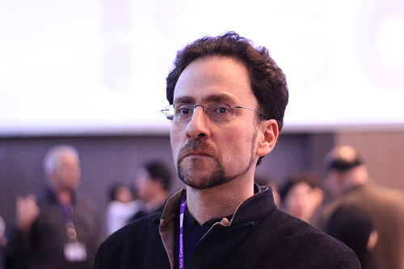
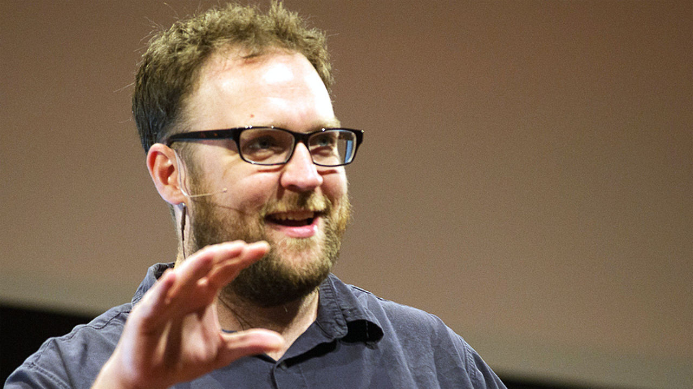
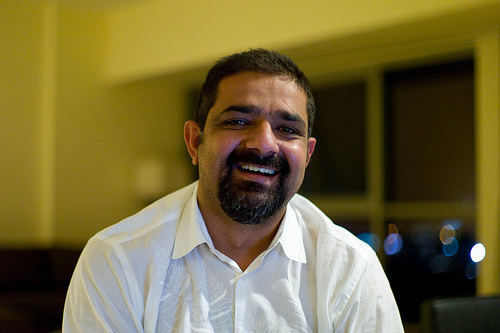
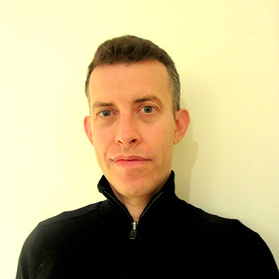
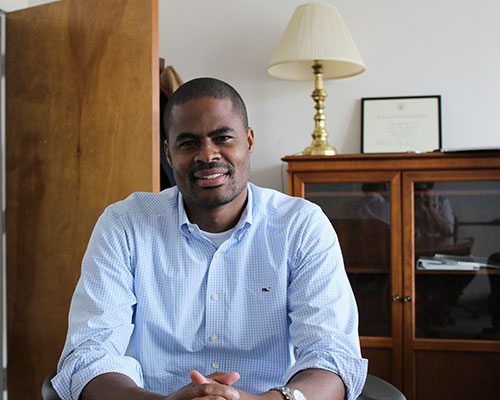

About Us
Whether taken in person or online, the GovLab Academy’s courses, clinics, coaching programs, and workshops offer a flipped learning experience. There are no experts at the front of the room or the top of the screen delivering packaged content to passive learners.
The goal of the GovLab Academy is to train public problem solvers – what we call public entrepreneurs – to use technology to create implementable engagement projects with the ultimate objective of improving people’s lives.
We do not measure success by levels of enrollment but by the impact participant projects create.
Ultimately, you are at the center of everything we do – a public entrepreneur working on real projects in real communities. Around you we organize the relevant materials, mentor and coaching networks, training exercises, and practice sessions. For you we curate readings and videos, gather examples of best practice, design process interventions, provide critiques and advice, and make introductions to experts.
Over the last three years, in a series of Masters-level academic courses and online and off-line workshops and coaching programs, the GovLab and its network of 25 world-class instructors and coaches and over 100 mentors have trained 446 participants in more than a dozen US cities and thirty foreign countries to take a public interest technology project from idea to implementation. FOR MORE ABOUT WHAT WE HAVE LEARNED
The GovLab
The GovLab is an action-research center with a mission to improve people’s lives by changing the way we govern. We aim to accomplish this by leveraging advances in technology to enable more open, collaborative, effective, and legitimate ways to make better decisions and solve public problems.
Certificates and Badges
Non-credit online participants who complete the program receive an authenticated Certificate and Badge. Badges are open, portable and "stackable" with other badges.
Badges can be displayed as a credential by incorporating into a resume or website. GovLab Academy will maintain a registry of all badge recipients. For successful participants the program could serve as a gateway to opportunities to compete for a range of Fellowship and funding opportunities, including from the Knight Foundation, the D-Prize, GovLab and more.
Faculty Members
Jos Berens
Project Coordinator of the Data Governance Project
Brian Behlendorf
Managing Director at Mithril Capital Management
Alexandra Clare
Founder of Iraq Re:Coded
Geoff Mulgan
Chief Executive of NESTA
Benjamin Kallos
Chair of the Committee on Governmental Operations of the City Council
Tiago Peixoto
Team Lead at the Digital Engagement Unit of the World Bank
Miriam Nisbet
Former Director of the Office of Government Information Services
Hollie Russon Gilman
Fellow, New America Foundation and expert, Participatory Budgeting
Beth Simone Noveck
Founder of The GovLab
Alan Kantrow
Senior Advisor
Andrew Young
Associate Director of Research
Arnaud Sahuguet
Director of The Foundry @ Cornell Tech
Dinorah Cantú-Pedraza
Coaching Programs Coordinator
Stefaan Verhulst
Co-Founder and Chief Research and Development Officer
Francois Grey
Coordinator of the Citizen Cyberscience Centre
Clay Johnson
Chairman of the Department of Better Technology
Joeri van den Steenhoven
Director of the MaRS Solutions Lab
Karim Lakhani
Lumry Family Associate Professor of Business Administration at the Harvard Business School
Gavin Hayman
Executive Director of the Open Contracting Partnership
Amen Ra Mashariki
Chief Analytics Officer of New York City
Liz Barry
Co-founder & Director of Community Development at the Public Lab
Puneet Kishor
Univ of Wisconsin and Former Manager of Science and Data Policy at Creative Commons
Daren C. Brabham
Assistant Professor in the Annenberg School for Communication & Journalism at the University of Southern California
Henry Timms
Executive Director 92Y and Founder #GivingTuesday
Julian Carver
Data Driven Innovation Consultant and Former CIO of the Canterbury Earthquake Recovery Authority
María Hermosilla
Graduate Research Assistant
Ana Tovar
Legal Research Fellow
Jos Berens
Project Coordinator of the Data Governance Project
Jos Berens is the Project Coordinator of the Data Governance Project (DGP), an international multidisciplinary collaboration between the Governance Lab, the World Economic Forum, and Leiden University. The collaboration focuses on building an expert network to solve questions regarding corporate data sharing for social good, particularly in a development context. Working with a number of international organisations, the DGP looks at concrete governance issues in the data for development space. Based on the solutions found, the DGP is developing a framework for corporate data sharing for social good. Jos holds an LL.B in Dutch Law and a BA in Philosophy of a Specific Discipline, both obtained at Groningen University. He is currently pursuing an LL.M in Dutch Criminal Law and an LL.M in Public International Law, the former in Groningen and the latter at Utrecht University. Jos specialises in privacy, data ethics and benefit/risk assessment regarding data collection and use.
Brian Behlendorf
Managing Director at Mithril Capital Management
Brian Behlendorf is Managing Director at Mithril Capital Management in San Francisco. His career has been a mix of technology start-up, public policy, and non-profit tech leadership. Brian serves on the Boards of the Mozilla Foundation, the Electronic Frontier Foundation, and Benetech, three organizations using technology to fight for civil liberties, open technologies, and social impact in the digital domain. Prior to Mithril, Brian was Chief Technology Officer at the World Economic Forum. He also served for two years at the White House as advisor to the Open Government project within the Office of Science and Technology Policy, and then later as advisor to Health and Human Services on open software approaches to health information sharing. Before that he has founded two tech companies (CollabNet and Organic) and several Open Source software projects (Apache, Subversion, and more).
Alexandra Clare
Founder of Iraq Re:Coded
Before arriving at the GovLab, Ali worked as a criminal prosecutor for the Australian Government and as a fellow at United Nations Office of the Special Representative for Children and Armed Conflict, Human Rights Watch and at International Crisis Group undertaking research and advocacy on various crisis situations from Syria to the Democratic Republic of Congo.
Geoff Mulgan
Chief Executive of NESTA
Geoff Mulgan CBE (born 1961) is Chief Executive of the National Endowment for Science Technology and the Arts (NESTA)[1] and Visiting Professor at University College London, the London School of Economics, the University of Melbourne and a regular lecturer at the China Executive Leadership Academy. He is an adviser to many governments around the world, and has been a board member of the Work Foundation, the Health Innovation Council, Political Quarterly and the Design Council, and chair of Involve. He is also currently chair of the Studio Schools Trust and the Social Innovation Exchange. His recent books include The Art of Public Strategy - Mobilising Power and Knowledge for the Public Good, Good and Bad Power: the ideals and betrayals of government and Connexity. His latest book The Locust and the Bee was published by Princeton University Press in March 2013. Read more on some of the ideas Geoff has been involved in over the years.
Benjamin Kallos
Chair of the Committee on Governmental Operations of the City Council
At the beginning of his career in public service, Ben Kallos put Albany voting records online so New Yorkers could hold politicians accountable. Since then, he has run a government reform organization that helped defeat a corrupt politician and has served as Policy Director for former Public Advocate Mark Green. Council Member Kallos serves as Chair of the Committee on Governmental Operations of the City Council, where he has fought to bring reform and transparency to government agencies. Praised by the New York Times for his "fresh ideas," Council Member Kallos has advocated for improving our schools, senior services and transportation. Council Member Kallos graduated from Bronx Science, SUNY Albany and SUNY Buffalo Law School. He has a background in law, working as a union-side labor attorney, as well as technology and government, and has served as a member of Community Board 8 and Statewide Committee Chair for the New York Democratic Lawyers Council. He and his wife reside on the East Side, where he has lived his entire life.
Tiago Peixoto
Team Lead at the Digital Engagement Unit of the World Bank

Tiago Peixoto (PhD) is a Team Lead at the World Bank’s Digital Engagement Unit. Featured in TechCrunch as one of the “20 Most Innovative People in Democracy”, Tiago is an internationally recognized expert working at the intersection of technology and citizen engagement. At the World Bank his activities focus on working with governments to leverage technology-enabled participation for better public policies and services. As the lead of the Bank’s Digital Engagement Evaluation Team (DEET), he coordinates evaluation and research activities that apply cutting-edge methodologies to examine the effects of technology on participation, transparency, accountability and government responsiveness. Prior to joining the World Bank, Tiago managed projects and worked as an advisor and consultant for various organizations, such as the European Commission, OECD, United Nations, and the Brazilian and UK governments. A Research Director of the Electronic Democracy Centre at the University of Zurich and faculty member of NYU’s Governance Lab, Tiago holds a PhD and a Masters in Political Sciences from the European University Institute, as well as a Masters in Organized Collective Action from Sciences-Po Paris. He blogs at DemocracySpot.net and tweets at @participatory
Miriam Nisbet
Former Director of the Office of Government Information Services
Miriam Nisbet was the founding Director of the Office of Government Information Services (OGIS), National Archives and Records Administration (NARA). Created by the 2007 amendments to the Freedom of Information Act, OGIS is the federal FOIA ombudsman office, charged with providing mediation services to resolve disputes between FOIA requesters and federal agencies and with improving FOIA administration. Miriam retired in November 2014. She previously worked for the United Nations Educational, Scientific and Cultural Organization (UNESCO), the American Library Association, NARA, and the US Department of Justice. She is a member of the Bars of the District of Columbia and North Carolina.
Hollie Russon Gilman
Fellow, New America Foundation and expert, Participatory Budgeting
Hollie Russon Gilman holds a Ph.D. and M.A. from the Department of Government at Harvard University and A.B. from the University of Chicago with highest honors in political science. Her dissertation is the first academic study of participatory budgeting in the U.S. Dr. Gilman is an expert in technology, civic engagement, innovation, and governance. She most recently served as Open Government and Innovation Advisor in the White House Office of Science and Technology Policy. In this role, she worked to implement President Obama's second term Open Government agenda, including inter-agency commitments under the international Open Government Partnership. Dr. Gilman is a founding researcher and organizer for the Open Society Foundation's Transparency and Accountability Initiative and Harvard's Gettysburg Project to revitalize 21st Century civic engagement. She has worked as an advisor, researcher, and consultant to leading non-profits and foundations at the intersection of technology and the public sector including the Case Foundation, Center for Global Development, Google.org, and the World Bank Institute. She has published in numerous academic and popular audience publications including the International Studies Review and Journal of Public Deliberation. Her writings appear frequently in diverse publications including Al Jazeera America, Brookings' TechTank, Boston Globe, Harvard's Challenges to Democracy, Next City, Slate and Vox.
Beth Simone Noveck
Founder of The GovLab
Beth Simone Noveck directs The Governance Lab and its MacArthur Research Network on Opening Governance. Funded by the John D. and Catherine T. MacArthur Foundation, the John S. and James L. Knight Foundation and Google.org, the GovLab strives to improve people’s lives by changing how we govern. The GovLab designs and tests technology, policy and strategies for fostering more open and collaborative approaches to strengthen the ability of people and institutions to work together to solve problems, make decisions, resolve conflict and govern themselves more effectively and legitimately. The Jerry Hultin Global Network Visiting Professor at New York University’s Polytechnic School of Engineering, she was formerly the Jacob K. Javits Visiting Professor at the Robert F. Wagner Graduate School of Public Service and a visiting professor at the MIT Media Lab. Beth is a professor of law at New York Law School. She served in the White House as the first United States Deputy Chief Technology Officer and director of the White House Open Government Initiative (2009-2011). UK Prime Minister David Cameron appointed her senior advisor for Open Government, and she served on the Obama-Biden transition team. Among projects she’s designed or collaborated on are Unchat, The Do Tank, Peer To Patent, Data.gov, Challenge.gov and the Gov Lab’s Living Labs and training platform, The Academy. A graduate of Harvard University and Yale Law School, she serves on the Global Commission on Internet Governance and chaired the ICANN Strategy Panel on Multi-Stakeholder Innovation. She is a member of the Advisory Board of the Open Contracting Partnership. She was named one of the “Foreign Policy 100″ by Foreign Policy, one of the “100 Most Creative People in Business” by Fast Company and one of the “Top Women in Technology” by Huffington Post. She has also been honored by both the National Democratic Institute and Public Knowledge for her work in civic technology. Beth is the author of Wiki Government: How Technology Can Make Government Better, Democracy Stronger and Citizens More Powerful, which has also appeared in Arabic, Russian, Chinese and in an audio edition, and co-editor of The State of Play: Law, Games and Virtual Worlds. Her next book Smart Citizens: Smarter State will appear with Harvard University Press. She tweets @bethnoveck.
Alan Kantrow
Senior Advisor
Alan Kantrow is Senior Advisor of The GovLab. Prior to joining The GovLab, Alan was Managing Partner of Alan Kantrow LLC, where he provided advice on strategy, organization, innovation, communication, and knowledge management to corporations, colleges and universities, and government entities focused on educational and economic development in many different parts of the world. He is also a Senior Advisor to HCD Global in Shanghai. In parallel, he has been Professor of Management and Director of an infrastructure-focused research center at Moscow School of Management/Skolkovo, Visiting Scholar at Sloan School of Management (MIT), and adjunct lecturer in strategy at Babson College. Previously, for more than a dozen years, Alan was a Senior Partner and Chief Knowledge Officer at Monitor Group. Before that has was a Partner and Director of Communications for Asia-Pacific at McKinsey & Company, as well as Editor of the McKinsey Quarterly. Still earlier, he was a Founding Partner of Winthrop Group (business historians) and Senior Editor of Harvard Business Review. He is the author of several books and many articles, and his blog on tertiary education can be found at HBR.org. Alan holds both his AB and PhD from Harvard University.
Andrew Young
Associate Director of Research
Andrew Young is the GovLab’s Associate Director of Research. He earned his Master’s degree in the Media, Culture and Communication department of NYU’s Steinhardt School of Culture, Education and Human Development, with a focus on Technology and Society. In addition to open governance, his research interests include privacy, Internet activism, values in design and the ethical implications of the use of new technologies in politics. His Master’s thesis explored the largely unexamined use of data-tracking technologies on congressional campaign websites to inform microtargeting efforts, and won the department’s Outstanding Thesis Award. Before arriving at the GovLab, Andrew worked with Chief of Research Stefaan Verhulst at the Markle Foundation, where his research centered on the use of technology to bolster economic security. Prior to his graduate work at NYU, Andrew attended Pennsylvania State University, where he studied English and Communications. He also spent two semesters at Goldsmiths College, University of London. He can be found on Twitter at @AndrewYoungNYC.
Arnaud Sahuguet
Director of The Foundry @ Cornell Tech
Dr. Arnaud Sahuguet was until recently a Product Manager for Google.org in New York working on civic innovation, as part of the Google social impact team. For the last two years, he has been working on mobile micro-donations (OneToday) and child protection (in collaboration with the National Center for Missing and Exploited Children). Before Google.org, he worked on Google Maps infrastructure and helped the Google Speech team productize its technology, with products such as GOOG-411 and Voice Search. Before joining Google in 2006, he worked almost 5 years as a Member of Technical Staff at Bell Labs research, in Murray Hill, NJ, where he published numerous papers, worked on standards for user profile management in telecom networks, identity management, personalization and converged services. Arnaud got his PhD from UPenn, on the topic of distributed query languages and optimization. While at UPenn, Arnaud founded Tropean Inc, to commercialize a screen scrapping technology for web sites. Before that, he graduated from Ecole Nationale des Ponts et Chaussées in France (MSc in Civil Engineering) and from Ecole Polytechnique (BS).
Dinorah Cantú-Pedraza
Coaching Programs Coordinator
Dinorah Cantu coordinates the GovLab Academy, a Knight-Foundation funded online institute aimed at helping government and social innovators take innovative projects from idea to implementation. Under her direction, the Academy has worked with over five hundred innovators from more than 30 countries online and off over the last two years. Thousands more have watched its skill-building videos. She has put together over 12 Coaching Programs, the Academy’s signature mentoring and peer to peer learning initiative, where over 95% of whose participants complete the program. The Academy is a project of the Governance Lab, based at New York University. GovLab focuses on the use of technology to improve how we govern. Dinorah has also designed the GovLab’s Crowdsorcerer expert system, a software tool to deliver customized case studies to government leaders about open innovation. Working together with lawyers and education experts from NYU, she also designed an expert system to help universities determine the legal requirements for offering online education. She also runs the GovLab’s Demos for Democracy video series where she interviews leading technologists about new platforms to advance the public interest. A lawyer by training, Dinorah founded and directed the Human Rights Center of the Facultad Libre de Derecho de Monterrey prior to coming to New York in 2012. She holds an MPA in Public and Nonprofit Management and Policy at NYU Robert F. Wagner School of Public Service and is passionate about the value of civic technology for strengthening human rights. She is bilingual in English and Spanish and tweets at @dinorah_cantu.
Stefaan Verhulst
Co-Founder and Chief Research and Development Officer

Stefaan G. Verhulst is Co-Founder and Chief Research and Development Officer of the Governance Laboratory @NYU (GovLab) where he is responsible for building a research foundation on how to transform governance using advances in science and technology. Verhulst’s latest scholarship centers on how technology can improve people’s lives and the creation of more effective and collaborative forms of governance. Specifically, he is interested in the perils and promise of collaborative technologies and how to harness the unprecedented volume of information to advance the public good. Before joining NYU full time, Verhulst spent more than a decade as Chief of Research for the Markle Foundation, where he continues to serve as Senior Advisor. At Markle, an operational foundation based in New York, he was responsible for overseeing strategic research on all the priority areas of the Foundation including, for instance: transforming health care using information and technology, re-engineering government to respond to new national security threats, improving people’s lives in developing countries by connecting them to information networks, developing multi-stakeholder networks to tackle global governance challenges, changing education through information technology et al. Many of Markle’s reports have been translated into legislation and executive orders, and have informed the creation of new organizations and businesses. He is also an Adjunct Professor in the Department of Culture and Communications at New York University, Senior Research Fellow for the Center for Media and Communications Studies at Central European University in Budapest; and an Affiliated Senior Research Fellow at the Center for Global Communications Studies at the University of Pennsylvania’s Annenberg School for Communications. Previously at Oxford University he co-founded and was the Head of the Programme in Comparative Media Law and Policy at the Centre for Socio Legal Studies, and also served as Senior Research Fellow of Wolfson College. He is still an emeritus fellow at Oxford. He also taught several years at the London School of Economics. Verhulst was the UNESCO Chairholder in Communications Law and Policy for the UK, a former lecturer on Communications Law and Policy issues in Belgium, and Founder and Co-Director of the International Media and Info-Comms Policy and Law Studies at the University of Glasgow School of Law. He has served as a consultant to numerous international and national organizations, including the Council of Europe, the European Commission, UNESCO, World Bank, UNDP, USAID, the UK Department for International Development among others. He has been a grant recipient of the Bertelsmann Foundation, the Ford Foundation, the Rockefeller Foundation, and the Markle Foundation. Verhulst has authored and co-authored several books, including: In Search of the Self: Conceptual Approaches to Internet Self Regulation (Routledge, 2001); Convergence in European Communications Regulation (Blackstone, 1999); EC Media Law and Policy (AWL, 1998); Legal Responses to the Changing Media (OUP, 1998); and Broadcasting Reform in India (OUP, 1998). Most recently, he co-edited The Routledge Handbook of Media Law (2013). Verhulst is also founder and editor of numerous journals including the International Journal of Communications Law and Policy, and the Communications Law in Transition Newsletter.
Francois Grey
Coordinator of the Citizen Cyberscience Centre
Francois Grey is a physicist by training, with a background in nanotechnology and a passion for citizen science. Since September 2014, he is Invited Professor at the University of Geneva and Manager of the Citizen Cyberscience Centre, a partnership between CERN, the United Nations Institute of Training and Research and the University of Geneva.
The CCC develops technologies that lower the barrier to entry for online participatory science and promotes the use of these technologies in developing regions through face-to-face meetups between scientists, developers and citizens. The CCC has helped to launch citizen science projects such as CERN’s Test4Theory, which is part of the LHC@home volunteer computing initiative, and open source platforms for citizen science like Crowdcrafting.org, for volunteer thinking. Events launched by the CCC include the Africa@Home, Asia@home and Brasil@home workshops series, the CERN Webfest and the biannual Citizen Cyberscience Summit.
From 2013-2014 Francois was Head of Citizen Science at NYU’s Center for Urban Science and Progress, where he launched the Science and the City hackathons in collaboration with ITP, NYU’s Interactive Telecommunications Program and Science Hack Day NYC in collaboration with the World Science Festival.
Francois was based in Beijing from 2008-2013, where he helped establish the Open Wisdom Lab at Tsinghua University, China’s MIT, to promote concepts of open and participatory science. He also helped establish Tsinghua’s Lifelong Learning Lab, which extends concepts of participatory science to children of all ages. He has also been a visiting Senior International Expert with the Chinese Academy of Sciences, where he initiated online citizen science in China through a project called CAS@home. Francois received a prestigious Fellowship from the South-Africa-based Shuttleworth Foundation in 2010-11, for his efforts to promote citizen science in the developing world.
Clay Johnson
Chairman of the Department of Better Technology
Clay Johnson is an American technologist, co-founder and Chairman of the Department of Better Technology and best known for his role in supporting political campaigns and government agencies with technology services. He was one of the founders of Blue State Digital, the firm that built and managed Barack Obama’s online campaign for the presidency in 2008. After leaving Blue State, Johnson was the director of Sunlight Labs at the Sunlight Foundation, where he built an army of 2000 developers and designers to build open source tools to give people greater access to government data. He was awarded the Google/O’Reilly Open Source Organizer of the year in 2009, was one of Federal Computing Week’s Fed 100 in 2010, and won the CampaignTech Innovator award in 2011. Johnson’s combination of experience as a developer, working in politics, entrepreneurism, and non-profit work gives him a unique perspective on media and culture. His life is dedicated to giving people greater access to the truth about what’s going on in their communities, their cities and their governments. He still claims that he learned all he needs to know from a two year tour as the late-shift waiter at Waffle House in Atlanta, GA.
Joeri van den Steenhoven
Director of the MaRS Solutions Lab
Joeri van den Steenhoven is the Director of the MaRS Solutions Lab. He is a longtime social innovator fascinated by our society’s transition towards the knowledge society. Being a systems thinker, he likes to work on wicked problems and find innovative solutions with others. Joeri co-founded Kennisland, one of the leading change labs in the Netherlands and Europe. He also co-founded the KafkaBrigade, a research team that helps governments find and tackle red tape. He regularly advises, speaks and teaches on how to create system change. Joeri has worked with organizations like the Young Foundation (UK) and serves on the board of the Lisbon Council, the leading European thinktank on innovation and growth.
Karim Lakhani
Lumry Family Associate Professor of Business Administration at the Harvard Business School
Karim R. Lakhani is the Lumry Family Associate Professor of Business Administration at the Harvard Business School and the Principal Investigator of the Harvard-NASA Tournament Lab at the Institute for Quantitative Social Science. He specializes in the management of technological innovation in firms and communities. His research is on distributed innovation systems and the movement of innovative activity to the edges of organizations and into communities. He has extensively studied the emergence of open source software communities and their unique innovation and product development strategies. He has also investigated how critical knowledge from outside of the organization can be accessed through innovation contests. Currently Professor Lakhani is investigating incentives and behavior in contests and the mechanisms behind scientific team formation through field experiments on the TopCoder platform and the Harvard Medical School. Professor Lakhani’s research on distributed innovation has been published in Harvard Business Review, Innovations, Management Science, Nature Biotechnology, Organization Science, Research Policy and the Sloan Management Review. He is the co-editor of Perspectives on Free and Open Source Software (MIT Press), a book on community-based innovation. He has also published teaching cases on leading organizations practicing distributed innovation including: Data.gov, InnoCentive, Google, Myelin Repair Foundation, SAP, Threadless, TopCoder and Wikipedia. His research has been featured in publications like BusinessWeek, The Boston Globe, The Economist, Fast Company, Inc., The New York Times, The New York Academy of Sciences Magazine, Science, The Wall Street Journal, The Washington Post, and Wired. Professor Lakhani was awarded his Ph.D. in management from the Massachusetts Institute of Technology. He also holds an MS degree in Technology and Policy from MIT, and a Bachelor's degree in Electrical Engineering and Management from McMaster University in Canada. He was a recipient of the Aga Khan Foundation International Scholarship and a four year doctoral fellowship from Canada's Social Science and Humanities Research Council. Prior to coming to HBS he served as a Lecturer in the Technology, Innovation and Entrepreneurship group at MIT’s Sloan School of Management. Professor Lakhani has also worked in sales, marketing and new product development roles at GE Healthcare and was a consultant with The Boston Consulting Group. He was also the inaugural recipient of the TUM-Peter Pribilla Innovation Leadership Award.
Gavin Hayman
Executive Director of the Open Contracting Partnership
Gavin is currently the Executive Director of Global Witness and, before that, he was the organisation's Director of Campaigns since 2006. He oversees all of Global Witness groundbreaking and award-winning investigative, campaigning and advocacy work uncovering secret deals, corruption and conflict around the world. He helped create the international Publish What You Pay campaign and helped negotiate the intergovernmental Extractive Industries Transparency Initiative that brings together oil and mining companies, home- and host-governments and civil society to improve disclosure and oversight of over $1 trillion dollars of oil and mining money. He is an expert on illicit financial flows, and helped lead global efforts to end the abuse of anonymous shell companies for money laundering and financial crime, including working with the British government's recent presidency of the G8 and the Open Government Partnership. He has a Doctorate from the University of Reading and has worked with Chatham House in London and the United National Environmental Programme in the past on analysing and investigating global environmental crime.
Amen Ra Mashariki
Chief Analytics Officer of New York City
Amen Ra, former White House Fellow and currently Chief Analytics Officer for the New York City Mayor's Office of Data Analytics, is a computer scientist at the Johns Hopkins University Applied Physics Laboratory (JHU APL). As a senior bioinformatics researcher at JHU APL he develops and utilizes smart algorithms that explore biological data in search of complex associations and relationships in order to provide insight into common biological diagnostics and clinical trends. Prior to academia, Amen has spent 7 years in the technical industry as a senior software engineer for Motorola. He has authored 5 patent disclosures, and received the prestigious Chicago Museum of Science ‘Top Technology Innovators’ award. Over the last 8 years Amen has spent his summers teaching advanced computer science courses for 7th – 10th graders at the Johns Hopkins University Center For Talented Youth program. Amen earned his doctorate degree from Morgan State University, his Master’s degree in computer science from Howard University, and also his bachelor’s degree in computer science from Lincoln University.
Liz Barry
Co-founder & Director of Community Development at the Public Lab
Liz is an activist and designer interested in collaborative urban environments. My early days in New York involved catalyzing public interactions on sidewalks and subway stations with a giant "Talk To Me" sign as well as working 25 floors above Wall Street (SOM) designing international new cities and campuses. I'm originally from North Carolina where I managed an urban agriculture youth enterprise called the Durham Inner-city Gardeners (DIG). Currently, when I'm not hoisting cameras up on balloons (with Public Laboratory) or hugging trees with tape measures (with TreeKIT), I teach geospatial tools for urban design at Columbia, Parsons, and Pratt.
Puneet Kishor
Univ of Wisconsin and Former Manager of Science and Data Policy at Creative Commons

Since 1985 Puneet’s career has spanned rural appropriate technology design to international development, academia, research and science information policy. He is currently an independent consultant with The World Bank and also has an appointment at the Department of GeoScience, University of Wisconsin, Madison, WI, USA where he is working on PaleoDeepDive, a machine reading and learning system, built upon a new kind of digital library resource. Before that he was the Manager of Science and Data Policy at Creative Commons where he focused on open data, text and data mining, open science policy, and citizen-sourced information. He has also been a member of the CODATA Task Group on Data Citation Standards and Practices, and co-authored the chapter on Emerging Principles for Data Citation in the Task Group’s report titled “Out of Cite, Out of Mind.” Puneet’s current interest is in open sensor-based hardware, ethical issues around citizen-sourced information, licensing open hardware and certification of data quality, novel ways of citizen-engagement, and promoting hacker/maker spaces for learning-by-making, teaching-by-doing.
Daren C. Brabham
Assistant Professor in the Annenberg School for Communication & Journalism at the University of Southern California
Daren C. Brabham conducts research into online communities and the role of new media technologies in society. He has written extensively about crowdsourcing, a problem solving and production model where organizations tap into the collective intelligence of online communities. He is the author of the books Crowdsourcing (MIT Press, 2013) and Crowdsourcing in the Public Sector (Georgetown University Press, 2015), as well as more than a dozen articles and chapters appearing in such publications as Convergence; Planning Theory; Information, Communication & Society; American Journal of Preventive Medicine; and The Participatory Cultures Handbook. His research has been supported by funding from the U.S. Federal Transit Administration, the IBM Center for the Business of Government, and the Social Sciences and Humanities Research Council of Canada. He earned an M.S. and Ph.D. in communication from the University of Utah and a B.A. from Trinity University.
Henry Timms
Executive Director 92Y and Founder #GivingTuesday
As Executive Director of 92nd Street Y, Henry creates programs and movements that foster learning, civic responsibility, culture and innovation, both in New York City and around the world. He is the founder of #GivingTuesday, a global philanthropic movement that engages more than 27,000 partners worldwide and was awarded a Cannes Lion at the International Festival of Creativity; a PRWeek Global Award for Nonprofit Campaign of the Year; and the inaugural UJA-Federation Riklis Prize in Agency Entrepreneurship. Henry’s work has been profiled in publications like the Harvard Business Review, and his most recent thinking with Jeremy Heimans on “new power” was featured as the Big Idea in HBR and by CNN as one of the ten top ideas to change the world in 2015. Henry is a Practitioner-in-Residence at the Stanford University Center on Philanthropy and Civil Society and a member of the World Economic Forum’s Network of Global Agenda Councils. Henry was named the NonProfit Times Influencer of the Year in 2014 and was honored as one of Crain’s New York Business 40 under 40 in 2015.
Julian Carver
Data Driven Innovation Consultant and Former CIO of the Canterbury Earthquake Recovery Authority
Julian Carver is an investor, startup mentor, and technology innovator in the public and private sectors. He founded and exited three web software startups from 1995-2000. From 2000-2011 he led large shared services projects and data sharing strategies across central and local government and the private sector. In 2011 Julian worked with the Government Data and Information Reuse Secretariat to develop New Zealand’s Declaration on Open and Transparent Government. From April 2011 - June 2012 Julian led the establishment of information services at the Canterbury Earthquake Recovery Authority (CERA), as acting Chief Information Officer. From March 2013 - April 2015 he led the Canterbury Spatial Data Infrastructure (SDI) Programme at LINZ, a $5m investment in a set of eight ICT projects to support the $40 billion Christchurch rebuild.
María Hermosilla
Graduate Research Assistant
Maria Hermosilla is a Graduate Research Assistant at the GovLab. She is studying for a Master of Public Administration at NYU. Before moving to the USA from Santiago, Chile, she worked for five years in the public and nonprofit sectors. During the last two she led the citizen relations and information management unit at the Ministry of Public Works, where she implemented open government projects. Prior to that, she was chief of staff of the Vice Minister of Energy. Maria is a journalist with 4 years of experience in television as a reporter, producer and assistant director, and freelance correspondent for NPR. She can be found on twitter at @mphermosilla.
Ana Tovar
Legal Research Fellow
Ana is a Legal Research Fellow at the GovLab. She is a native of Mexico City. Ana recently received her Masters of Law from Yale Law School where she was selected to be a Global Health Justice Partnership (GHJP) Student Fellow in a collaborative initiative of Yale Law School and Yale School of Public Health. She was a staff editor of the Yale Journal of Health Policy, Law and Ethics.
Ana received her LLB from the Instituto Technologico Autonomo de Mexico (ITAM). During the defense of her professional exam, a three-member panel unanimously voted in favor of Special Mention to her thesis on homophobia and free speech.
Ana worked as Research Assistant for the Dean of the Law School, Jorge Cerdio, with whom she developed a cloud-based legal education tool.
While in law school, Ana spent a year working as a television anchor for the National Institute of Penal Sciences, hosting and producing a TV show co-produced by the Supreme Court’s Office and the National Institute of Penal Sciences and focusing on human rights and criminal sciences. She has also worked for the Instituto Nacional de Antropología e Historia as a deputy director , where she researched international law applied to World Heritage sites in Mexico.
She also served as Teacher Assistant for Professor Jesús Silva-Herzog Márquez and Hugo Concha Cantú.